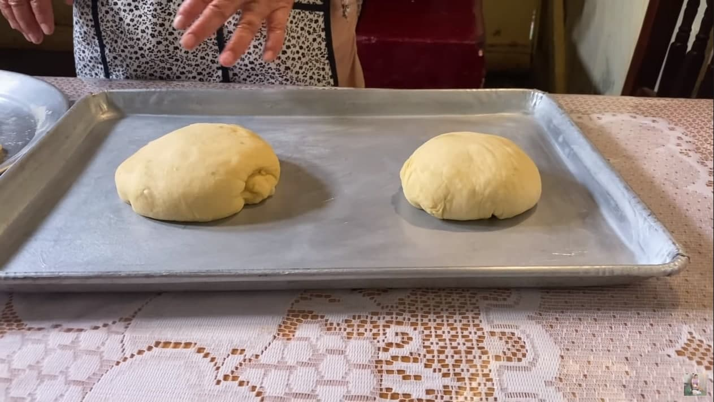

Recetario de Doña Ángela, Originaria de Rancho Cuin, Michoacán, México
Recetario
Receta de Pan de Muerto
Pan de muerto típico mexicano
Ingredientes
1½ taza de azúcar
1½ taza de margarina
8 huevos
1 taza de mantequilla
3 cucharada de levadura fresca
3 cucharadas de naranja rayada
¾ de taza de jugo de naranja
1½ kg de harina
2 cucharadas de vainilla
Sal (3 pizcas)
Procedimiento
Colocar toda la harina en un recipiente grande.
Colocar en el centro del recipiente, sobre la harina: Mantequilla, margarina, levadura,
jugo de naranja, azúcar, vainilla, sal y huevos.
Amasar todos los ingredientes hasta conseguir una masa homogenea y menos pegajosa que al inicio.
Colocar aceite en una charola grande y colocar la masa sobre la misma charola. Aceitar levemente la masa.
Dejar reposar por 90 minutos cubierta con tela.
Colocar manteca vegetal sobre otra charola grande.
Moldear trozos de masa con las manos para hacer bolitas del tamaño deseado.

Para los huesos que van encima, tomar un trozo pequeño de masa y amasar con la mano extendida haciendo presión leve.
Colocar el trozo de masa resultante sobre la bolita de masa hecha previamente para simular los huesos típicos del pan de muerto como se muestra en la imagen.
Hacer presión ligera con el dedo índice en el centro del pan y colocar en el hueco generado una bolita más de masa para obtener este resultado.
Repetir el proceso con la masa sobrante.
Dejar reposar por una hora más cubiertos con tela.
Meter al horno a una temperatura de 170°C(340°F) y esperar 20-30 min.
Verter sobre el pan mantequilla derretida y untar uniformemente.
Espolvorear azúcar sobre la toda la parte superior del pan.